library(tidyverse)
library(lsr)
library(vcd)
cleveland = read_csv("./data/cleveland.csv", na = "?")
hungary = read_csv("./data/hungarian.csv", na = "?")
long_beach = read_csv("./data/long_beach_va.csv", na = "?")
switzerland = read_csv("./data/switzerland.csv", na = "?")dfs = list(cleveland, hungary, long_beach, switzerland)
regions = c("Cleveland", "Hungary", "Long Beach", "Switzerland")
combined_df = map2(dfs, regions, ~ mutate(.x, region = .y)) |>
bind_rows()The tables below displays descriptive statistics for each variable in
the heart disease dataset, organized by region. The continuous variables
include age, trestbps, thalach,
oldpeak while the discrete variables consist of
sex, cp, fbs,
restecg, exang. These variables will be used
to assess the diagnosis of heart disease, as indicated by the
num variable.
Variables ca and thal were excluded from
the analysis due to incomplete data, with missing values exceeding 85%
in more than two regions, rendering these variables non-comparable.
Additionally, the chol variable was removed from the
analysis as all observations in Switzerland had a value of 0
summary = function(dataset) {
dataset_summary = skimr::skim(dataset) |>
as.data.frame() |>
select(2:6)
knitr::kable(dataset_summary, digits = 2)
}
summary(cleveland)| skim_variable | n_missing | complete_rate | numeric.mean | numeric.sd |
|---|---|---|---|---|
| age | 0 | 1.00 | 54.44 | 9.04 |
| sex | 0 | 1.00 | 0.68 | 0.47 |
| cp | 0 | 1.00 | 3.16 | 0.96 |
| trestbps | 0 | 1.00 | 131.69 | 17.60 |
| chol | 0 | 1.00 | 246.69 | 51.78 |
| fbs | 0 | 1.00 | 0.15 | 0.36 |
| restecg | 0 | 1.00 | 0.99 | 0.99 |
| thalach | 0 | 1.00 | 149.61 | 22.88 |
| exang | 0 | 1.00 | 0.33 | 0.47 |
| oldpeak | 0 | 1.00 | 1.04 | 1.16 |
| slope | 0 | 1.00 | 1.60 | 0.62 |
| ca | 4 | 0.99 | 0.67 | 0.94 |
| thal | 2 | 0.99 | 4.73 | 1.94 |
| num | 0 | 1.00 | 0.94 | 1.23 |
summary(hungary)| skim_variable | n_missing | complete_rate | numeric.mean | numeric.sd |
|---|---|---|---|---|
| age | 0 | 1.00 | 47.83 | 7.81 |
| sex | 0 | 1.00 | 0.72 | 0.45 |
| cp | 0 | 1.00 | 2.98 | 0.97 |
| trestbps | 1 | 1.00 | 132.58 | 17.63 |
| chol | 23 | 0.92 | 250.85 | 67.66 |
| fbs | 8 | 0.97 | 0.07 | 0.26 |
| restecg | 1 | 1.00 | 0.22 | 0.46 |
| thalach | 1 | 1.00 | 139.13 | 23.59 |
| exang | 1 | 1.00 | 0.30 | 0.46 |
| oldpeak | 0 | 1.00 | 0.59 | 0.91 |
| slope | 190 | 0.35 | 1.89 | 0.34 |
| ca | 291 | 0.01 | 0.00 | 0.00 |
| thal | 266 | 0.10 | 5.64 | 1.62 |
| num | 0 | 1.00 | 0.36 | 0.48 |
summary(long_beach)| skim_variable | n_missing | complete_rate | numeric.mean | numeric.sd |
|---|---|---|---|---|
| age | 0 | 1.00 | 59.35 | 7.81 |
| sex | 0 | 1.00 | 0.97 | 0.17 |
| cp | 0 | 1.00 | 3.50 | 0.80 |
| trestbps | 56 | 0.72 | 133.76 | 21.54 |
| chol | 7 | 0.96 | 178.75 | 114.04 |
| fbs | 7 | 0.96 | 0.35 | 0.48 |
| restecg | 0 | 1.00 | 0.74 | 0.68 |
| thalach | 53 | 0.74 | 122.80 | 21.99 |
| exang | 53 | 0.74 | 0.65 | 0.48 |
| oldpeak | 56 | 0.72 | 1.32 | 1.11 |
| slope | 102 | 0.49 | 2.13 | 0.67 |
| ca | 198 | 0.01 | 0.00 | 0.00 |
| thal | 166 | 0.17 | 6.29 | 1.29 |
| num | 0 | 1.00 | 1.52 | 1.22 |
summary(switzerland)| skim_variable | n_missing | complete_rate | numeric.mean | numeric.sd |
|---|---|---|---|---|
| age | 0 | 1.00 | 55.32 | 9.03 |
| sex | 0 | 1.00 | 0.92 | 0.27 |
| cp | 0 | 1.00 | 3.70 | 0.69 |
| trestbps | 2 | 0.98 | 130.21 | 22.56 |
| chol | 0 | 1.00 | 0.00 | 0.00 |
| fbs | 75 | 0.39 | 0.10 | 0.31 |
| restecg | 1 | 0.99 | 0.36 | 0.59 |
| thalach | 1 | 0.99 | 121.56 | 25.98 |
| exang | 1 | 0.99 | 0.44 | 0.50 |
| oldpeak | 6 | 0.95 | 0.65 | 1.06 |
| slope | 17 | 0.86 | 1.80 | 0.62 |
| ca | 118 | 0.04 | 1.60 | 0.55 |
| thal | 52 | 0.58 | 5.79 | 1.73 |
| num | 0 | 1.00 | 1.80 | 1.01 |
The plot illustrates the distribution of participants by age and sex across different regions, with respect to the diagnosis of heart disease. It is evident that the distribution varies significantly by region, likely due to differences in participant availability for the study across these regions.
Overall, there are noticeably more male participants, and the age distribution is relatively sparse for both groups—those without heart disease and those with heart disease. However, distinct patterns emerge when considering the regional breakdown. To gain a deeper understanding of the factors influencing heart disease prevalence, a more detailed analysis is necessary to identify which variables are contributing to the observed trends, and how these factors may differ or remain consistent across regions.
ggplot(combined_df, aes(x = age, y = num, color = factor(sex, levels = c(0,1), labels = c("Female", "Male")))) +
geom_point(alpha = 0.7) +
facet_wrap(~ region) +
theme_minimal() +
labs(title = "Distribution of participants",
x = "Age",
y = "Heart Disease Status",
color = "Sex")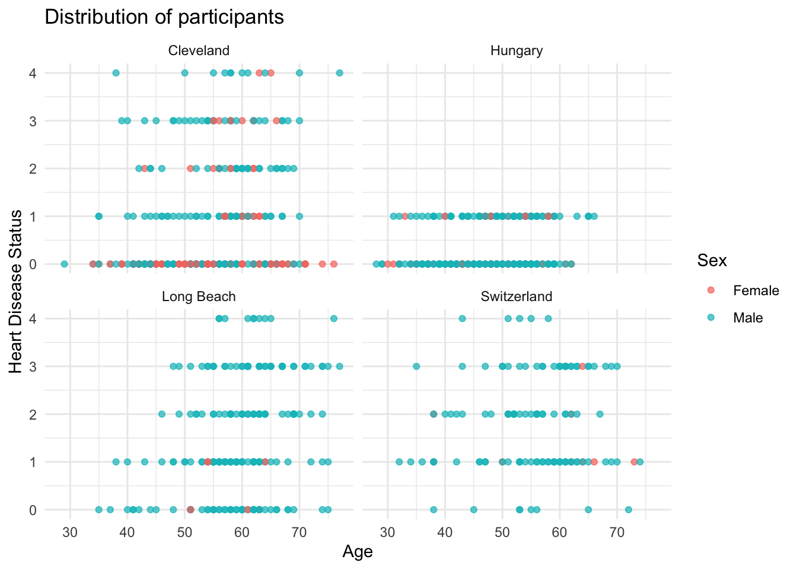
In Hungary, the heart disease status (num) is limited to
values 0 or 1, with no data available for statuses 2, 3, and 4, which
also indicate the presence of heart disease. To ensure consistency
across regions, the num variable was reclassified into a
binary format, with 0 representing no heart disease and 1 representing
heart disease.
combined_df = combined_df |>
mutate(num = factor(ifelse(num == 0, 0, 1), levels = c(0, 1)),
sex = factor(sex, levels = c(0, 1)),
slope = factor(slope),
thal = factor(thal),
cp = factor(cp),
fbs = factor(fbs),
restecg = factor(restecg),
exang = factor(exang))A correlation heatmap was generated for each region to examine the relationships between the variables, assess whether these correlations vary across regions, and to anayze any potential multicolinearity.
At a glance, the correlations differ across regions, with some showing stronger relationships than others. The following variables were selected based on the highest correlation values observed in each region:
age and thalach: A stronger negative
correlation was found in Hungary (-0.45) and Cleveland (-0.39) compared
to Switzerland (-0.29) and Long Beach (-0.16).age and trestbps: Long Beach exhibited a
stronger positive correlation (0.38) than Cleveland (0.28), Hungary
(0.26), and Switzerland (0.24).thalach and trestbps: A stronger negative
relationship was observed in Switzerland (-0.23) and Hungary (-0.22)
compared to Cleveland (-0.05) and Long Beach (0.00).thalach and oldpeak: A stronger negative
correlation was seen in Cleveland (-0.34) and Hungary (-0.32), while
Long Beach (0.19) and Switzerland (0.17) displayed weak positive
correlations.Despite these notable correlations, none exceed 0.7, suggesting that each variable has a unique impact on the outcome (heart disease status). Therefore, multicollinearity is not a concern when modeling a regression.
cols_to_include = c("age", "trestbps", "thalach", "oldpeak")
corr_plots = list()
par(mar = c(1, 1, 2.2, 1))
for(r in regions) {
region_data = combined_df |> filter(region == r)
corr_matrix = cor(region_data[, cols_to_include], use = "complete.obs")
corr_plots[[r]] = corrplot::corrplot(corr_matrix,
method = "color",
type = "lower",
addCoef.col = "black",
tl.col = "black",
tl.srt = 45)
mtext(paste("Correlation Heatmap for", r), side = 3, line = 1, cex = 1.5)
}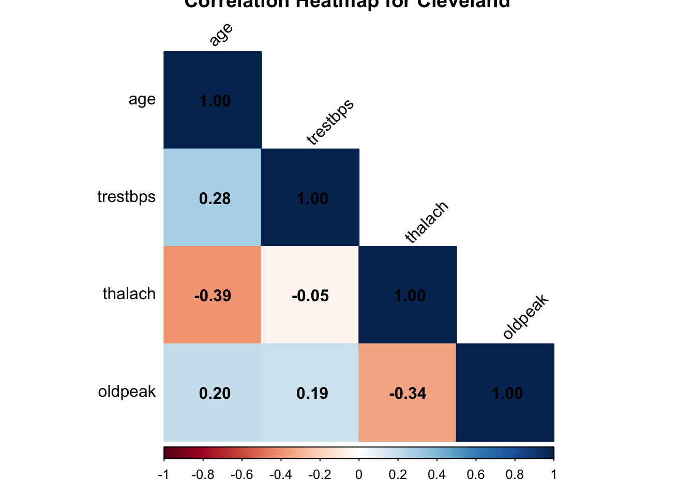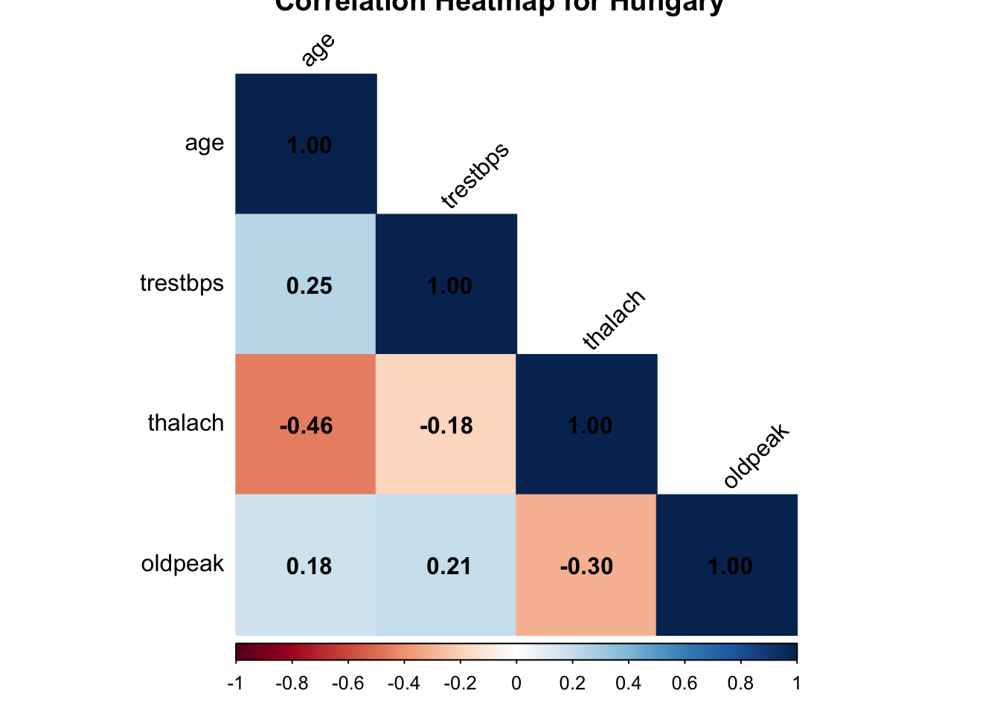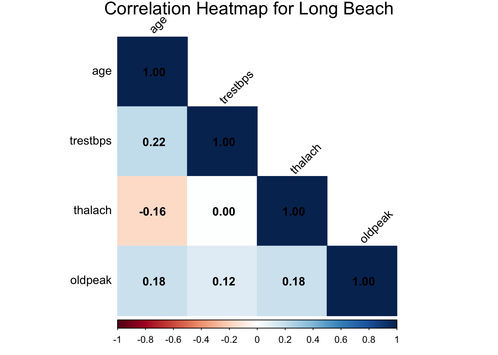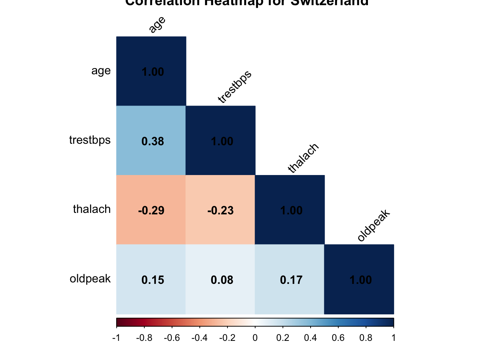
Boxplots were generated for each continuous variable in relation to
heart disease status (num) across different regions. This
analysis aimed to visually explore potential relationships between these
variables and the binary outcome of heart disease status, while also
highlighting regional differences in the distributions of continuous
variables.
age)Age is generally higher in heart disease cases across all regions, but the degree of overlap varies. Cleveland and Hungary show more distinct separation, with heart disease cases skewed toward older individuals. Long Beach and Switzerland exhibit greater overlap, suggesting weaker age-based differentiation. Outliers in younger individuals with heart disease are present in Switzerland and Long Beach.
Age is a strong predictor, especially in Cleveland and Hungary, where separation is more pronounced. Regions with greater overlap (Long Beach, Switzerland) suggest the need for interaction terms.
box_plot = function(data, variable) {
plot = ggplot(data, aes(x = factor(num), y = .data[[variable]], fill = factor(num))) +
geom_boxplot() +
theme(legend.position = "none") +
facet_wrap(~region)
return(plot)
}
plot_age = box_plot(combined_df, "age")
plot_age +
labs(title = "Boxplot of Age by Heart Disease Status",
x = "heart disease status",
y = "age")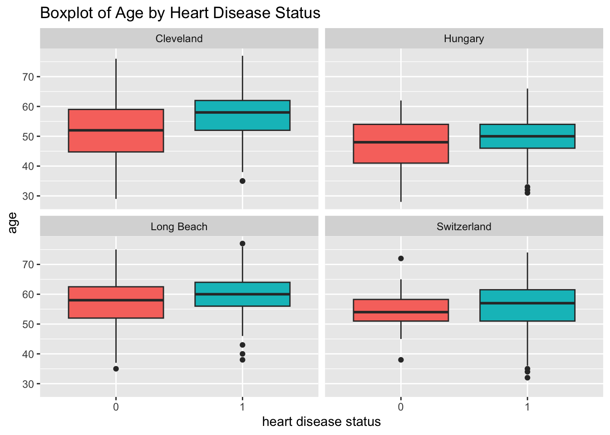
trestbps)Resting blood pressure shows minimal separation between heart disease and non-heart disease groups in most regions. Medians and interquartile ranges are similar across heart disease statuses in Cleveland, Hungary, and Long Beach. Switzerland shows slightly better separation, though the overlap remains significant. Outliers are observed in Cleveland and Long Beach, particularly for non-heart disease cases.
Resting blood pressure may have limited predictive value, as the overlap between the groups is significant across all regions. However, it could still contribute as a secondary predictor or in interaction with other variables.
plot_trestbps = box_plot(combined_df, "trestbps")
plot_trestbps +
labs(title = "Boxplot of Resting Blood Pressure by Heart Disease Status",
x = "heart disease status",
y = "resting blood pressure (in mm Hg)")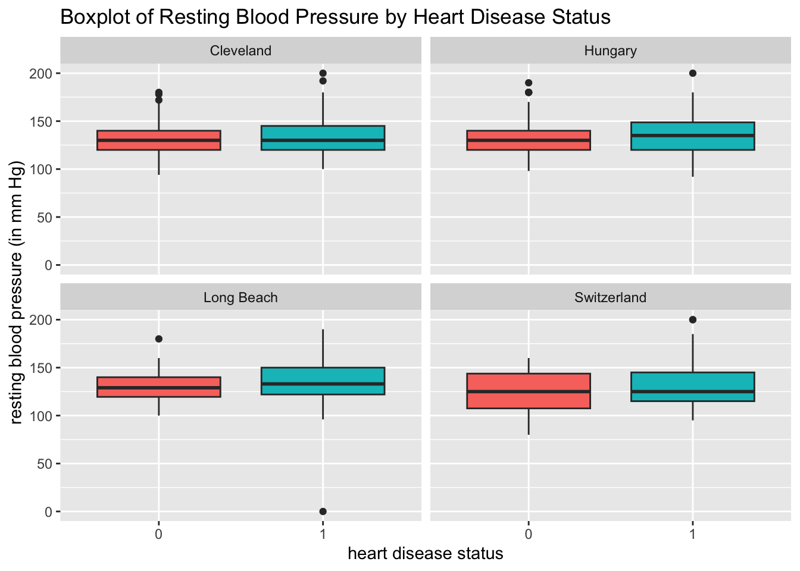
thalach)Across all regions, individuals with heart disease generally have lower maximum heart rates, though the degree of separation varies. Cleveland and Hungary show larger differences between the two groups. Long Beach and Switzerland show more overlap, particularly in the upper ranges of heart rates. Cleveland also has more outliers among non-heart disease cases.
Maximum heart rate is a strong predictor of heart disease across most regions, given its consistent trend of lower values in heart disease cases.
plot_thalach = box_plot(combined_df, "thalach")
plot_thalach +
labs(title = "Boxplot of Maximum Heart Rate by Heart Disease Status",
x = "heart disease status",
y = "maximum heart rate")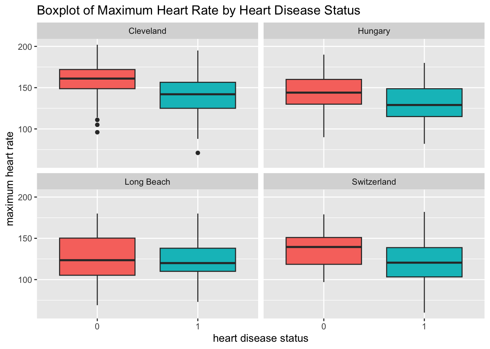
oldpeak)T depression appears higher in individuals with heart disease (status = 1) across all locations compared to those without (status = 0). Cleveland and Hungary show higher median T depression and larger interquartile ranges for heart disease cases compared to non-cases. Long Beach and Switzerland show smaller differences between heart disease and non-heart disease groups, with generally lower T depression levels. Outliers in Cleveland and Hungary are more pronounced, suggesting regional-specific variability.
T depression is likely a good predictor, particularly for Cleveland and Hungary, as it shows a clear separation between heart disease and non-heart disease cases. However, its predictive power may vary across regions, necessitating region-specific adjustments.
plot_oldpeak = box_plot(combined_df, "oldpeak")
plot_oldpeak +
labs(title = "Boxplot of T Depression by Heart Disease Status",
x = "heart disease status",
y = "T depression")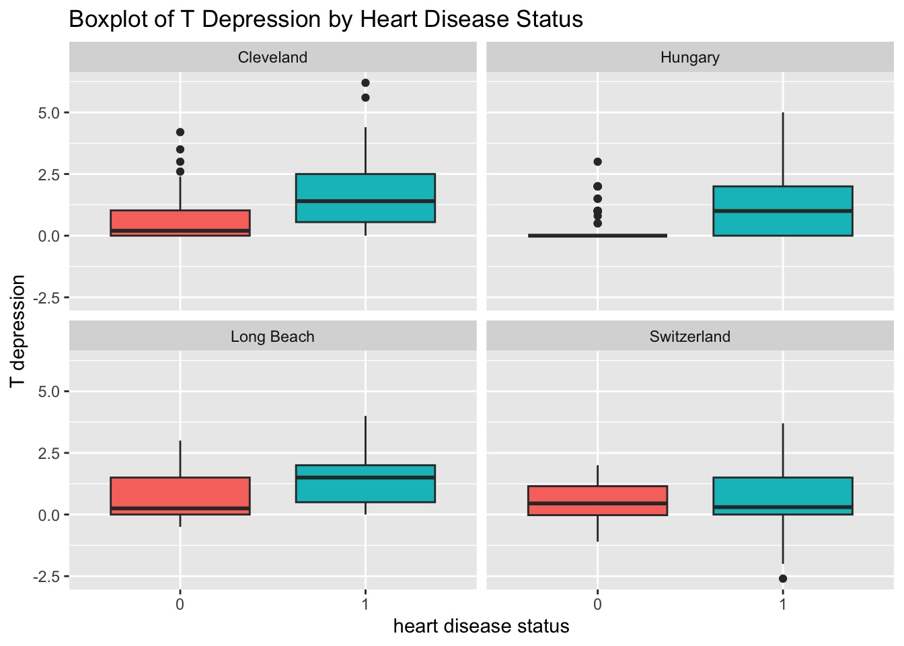
the datasets have 7 catagorical Variables:
sex: 1=male; 0=female
cp (chest pain type): 1=typical angina; 2=atypical angina; 3=non-anginal
pain; 4=asymptomatic
fbs (fasting blood sugar > 120 mg/dl): 1=true; 0=false
restecg (resting electrocardiographic results): 0=normal; 1=having ST-T
wave abnormality (T wave inversions and/or ST elevation or depression of
> 0.05 mV); 2: showing probable or definite left ventricular
hypertrophy by Estes’ criteria
exang (exercise induced angina): 1=yes; 0=no
slope (the slope of the peak exercise ST segment): 1=upsloping; 2=flat;
3=downsloping
thal: 3=normal; 6=fixed defect; 7=reversable defect
To examine the variables’ association with num, I will be using Cramér’s
V, which is a method based on the Chi-Squared statistic from a
contingency table of the two variables. It quantifies the strength of
the association, providing a value between 0, indicating no association
between the variables and 1, indicating a perfect association. Using
this menthod, we hope to identify key predictors that have strong
association with num, and thus focus on variables with higher Cramér’s V
values in the modeling efforts. This is also a good way in visualization
into the relationships within the data.
now, let’s look in to the plot, we can see that thal and cp have the highest Cramér’s V (>=0.5 and <1), suggesting that they are the most informative categorical predictors of heart disease in the dataset. Then, exang, slope, and sex also perform moderately good (>= 0.3 and <0.5), saying that they contribute meaningful information and should be included in predictive models. lastly, we observe fbs and restecg has low Cramér’s V (>0 and <0.2), indicating that they contribute limited information to the model.
While for our EDA, we can check each variables to see if they are complications of heart disease.
variables <- c("sex", "cp", "fbs", "restecg", "exang", "slope", "thal")
results <- numeric(length(variables))
for (i in seq_along(variables)) {
var <- variables[i]
df_temp <- combined_df %>%
select(num, all_of(var)) %>%
na.omit()
x <- droplevels(as.factor(df_temp$num))
y <- droplevels(as.factor(df_temp[[var]]))
table_var <- table(x, y)
results[i] <- cramersV(table_var)
}
association_df <- data.frame(Variable = variables, CramersV = results)
ggplot(association_df, aes(x = reorder(Variable, CramersV), y = CramersV, fill = CramersV)) +
geom_bar(stat = "identity") +
coord_flip() +
scale_fill_gradient(low = "lightblue", high = "darkblue") +
labs(
title = "Association Between Heart Disease Status and Predictor Variables",
x = "Predictor Variables",
y = "Cramér's V",
fill = "Cramér's V"
) +
theme_minimal()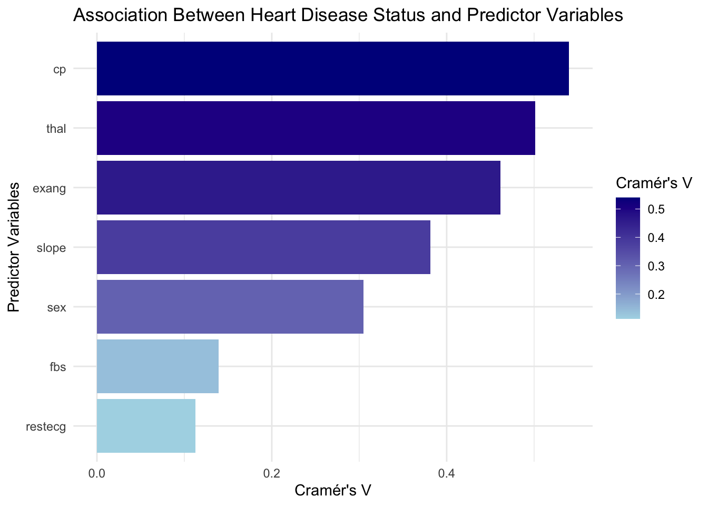
This part of graph is a macro-view of the participants, and in general terms, man would have less chance of getting heart disease than women.
ggplot(combined_df, aes(x = sex, fill = num)) +
geom_bar(position = "fill") +
facet_wrap(~ region) +
labs(
title = "Proportion of Heart Disease Status by sex",
x = "sex",
y = "Proportion",
fill = "Heart Disease Status"
) +
theme_minimal()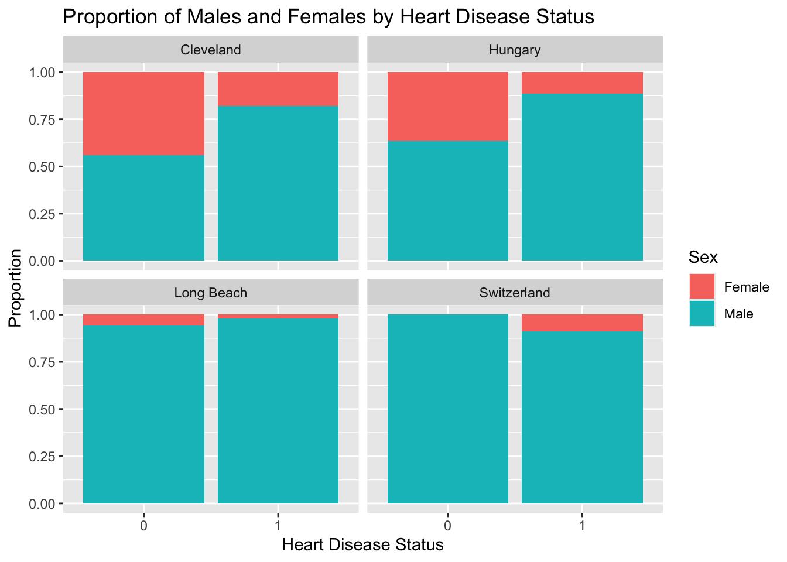
Chest pain type 4 (asymptomatic) has the strongest association with
getting heart disease across all locations. Chest pain type 1, 2, and 3
tend to show fewer cases of heart disease, specifically, for chest pain
2 (atypical angina), it has lowest proportions of individuals with heart
disease, indicating it might not be a complication of heart
disease.
There is consistency across locations, but proportions vary slightly by
region, suggesting potential regional differences in the dataset or
population characteristics.
ggplot(combined_df, aes(x = cp, fill = num)) +
geom_bar(position = "fill") +
facet_wrap(~ region) +
labs(
title = "Proportion of Heart Disease Status by Chest Pain Type (cp)",
x = "Chest Pain Type (cp)",
y = "Proportion",
fill = "Heart Disease Status"
) +
theme_minimal()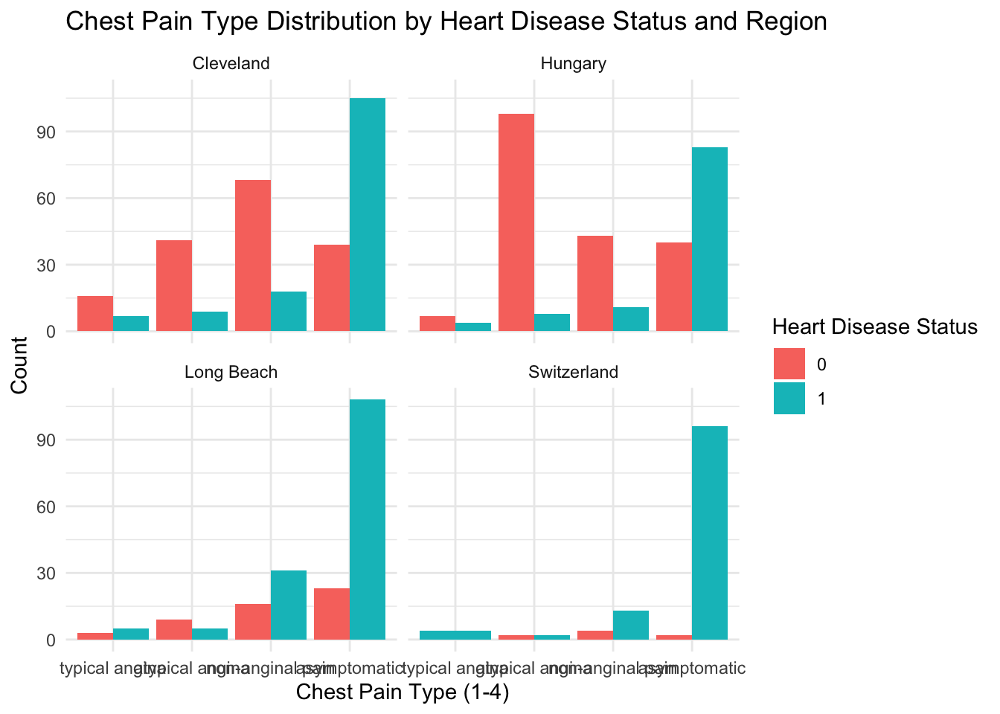
To interpret the graph, we need to know what is “slope”. In an
exercise electrocardiogram(ECG), an “upward slope” on the ST segment
generally indicates a normal response to exercise as the heart works
harder and electrical activity slightly shifts upward. while a “downward
slope” on the ST segment is typically considered abnormal and suggestive
of myocardial ischemia (reduced blood flow to the heart muscle). As
result, we can convert 1(upsloping) as low risk of getting heart
disease, 2(flat) and 3(downsloping) as moderate risk and high risk of
getting the disease respectively.
The results presented in the graph are almost identical to our
interpretation of the variables after conversion. people are less likely
to get the disease when they have normal peak exercise ST Segment, while
for those who observe abnormal peak exercise ST Segmet, they may have a
higher risk of getting heart disease.
# Plot for 'slope' (Slope of Peak Exercise ST Segment)
ggplot(combined_df |> filter(!is.na(slope)), aes(x = slope, fill = num)) +
geom_bar(position = "fill") +
facet_wrap(~ region) +
labs(
title = "Proportion of Heart Disease Status by Slope of Peak Exercise ST Segment (slope)",
x = "Slope of Peak Exercise ST Segment (slope)",
y = "Proportion",
fill = "Heart Disease Status"
) +
theme_minimal()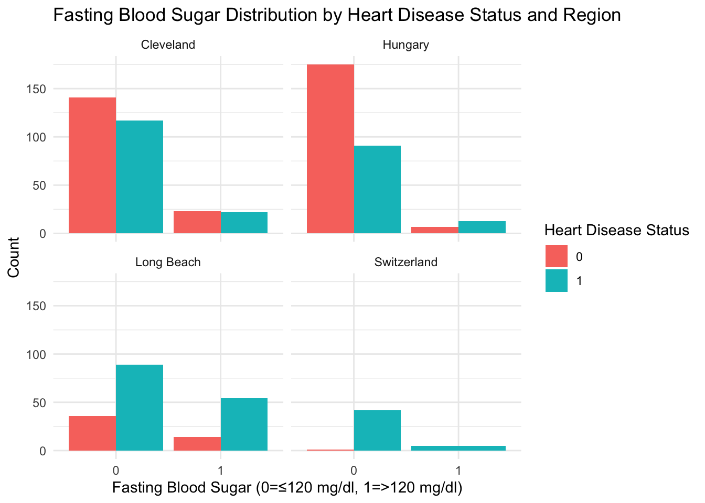 For this graph, we can hardly make any conclusion, because whether the resting electrocardiographic results are normal or not, There was no significant reduction in the risk of developing the disease.
ggplot(combined_df |> filter(!is.na(restecg)), aes(x = restecg, fill = num)) +
geom_bar(position = "fill") +
facet_wrap(~ region) +
labs(
title = "Proportion of Heart Disease Status by resting electrocardiographic results (restecg)",
x = "resting electrocardiographic results (restecg)",
y = "Proportion",
fill = "Heart Disease Status"
) +
theme_minimal()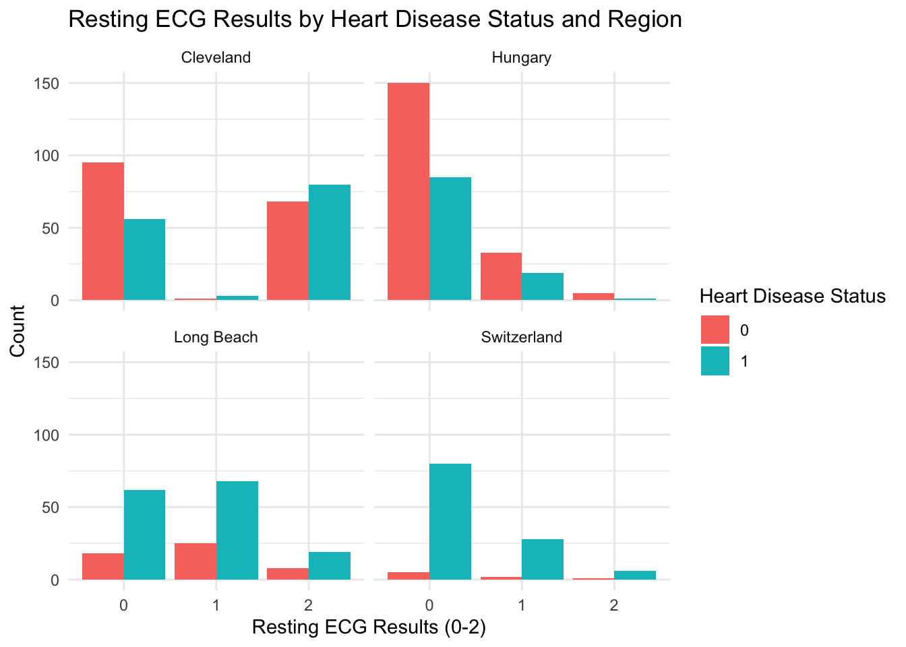
For the graphs list below, we can treat the variables as
binary:
For those who have defect of thalassemia (6 and 7), they tend to have
the disease. If people experienced exercise-induced angina (1), they are
at high risk of getting heart disease. People who have fasting blood
sugar > 120 mg/dl, they have more chance to get the disease compared
to those < 120 mg/dl.
ggplot(combined_df |> filter(!is.na(thal)), aes(x = thal, fill = num)) +
geom_bar(position = "fill") +
facet_wrap(~ region) +
labs(
title = "Proportion of Heart Disease Status by Thalassemia (thal)",
x = "Thalassemia (thal)",
y = "Proportion",
fill = "Heart Disease Status"
) +
theme_minimal()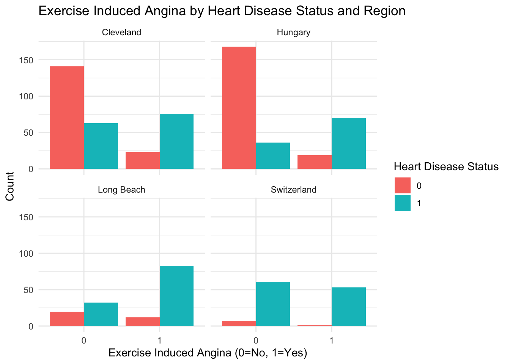
# Plot for 'exang' (Exercise-Induced Angina)
ggplot(combined_df |> filter(!is.na(exang)), aes(x = exang, fill = num)) +
geom_bar(position = "fill") +
facet_wrap(~ region) +
labs(
title = "Proportion of Heart Disease Status by Exercise-Induced Angina (exang)",
x = "Exercise-Induced Angina (exang)",
y = "Proportion",
fill = "Heart Disease Status"
) +
theme_minimal()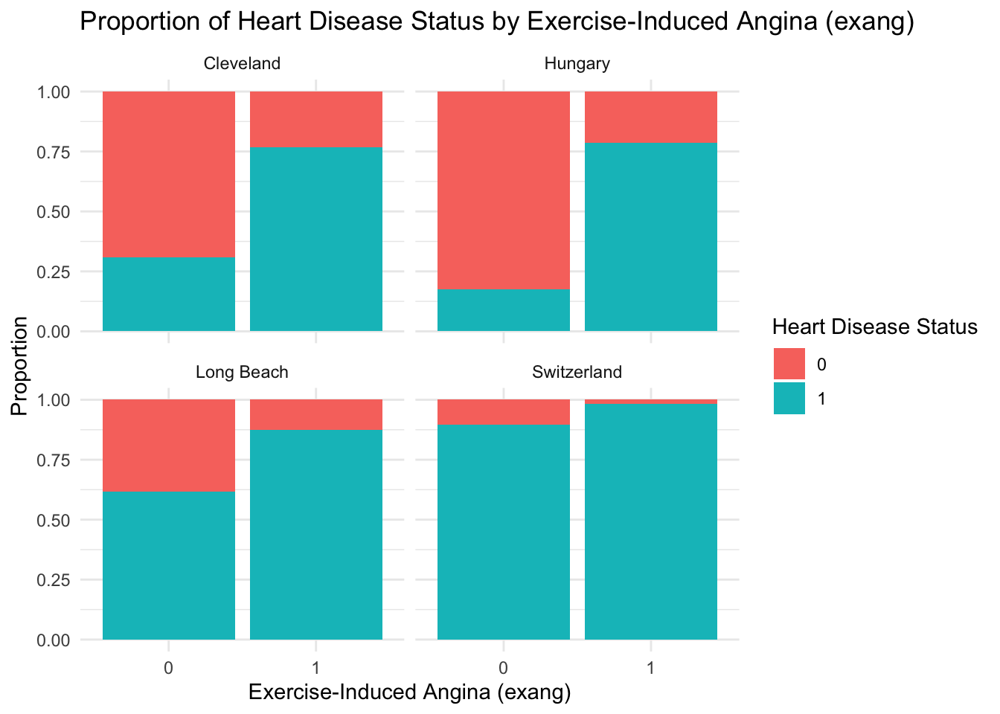
ggplot(combined_df |> filter(!is.na(fbs)), aes(x = fbs, fill = num)) +
geom_bar(position = "fill") +
facet_wrap(~ region) +
labs(
title = "Proportion of Heart Disease Status by fasting blood sugar > 120 mg/dl (fbs)",
x = "fasting blood sugar > 120 mg/dl (fbs)",
y = "Proportion",
fill = "Heart Disease Status"
) +
theme_minimal()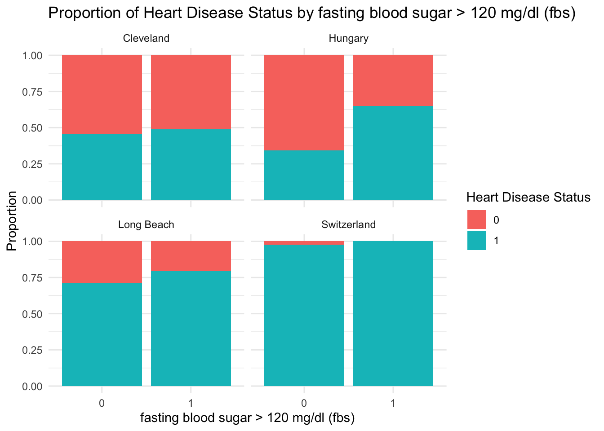
Though some variables may not suitable for the model, we can still
conclude that the complications of hart disease may be include
asymptomatic chest pain, abnormal Peak Exercise ST Segment, defect of
thalassemia, exercise-induced angina, and fasting blood sugar > 120
mg/dl.